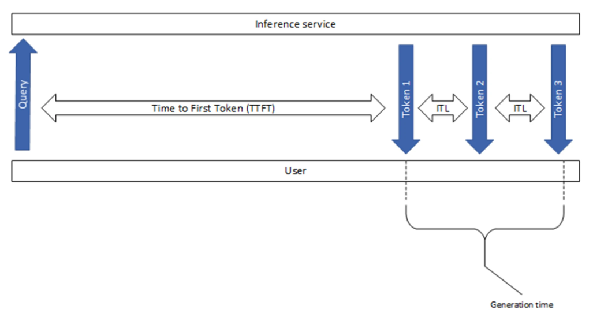
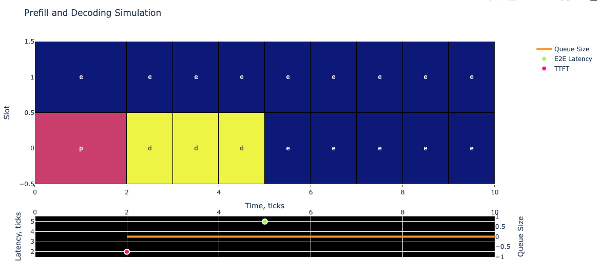
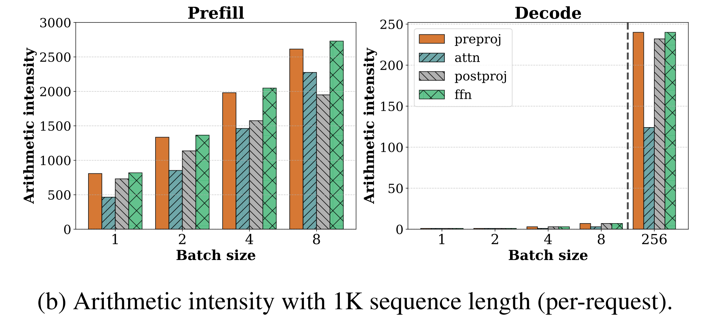
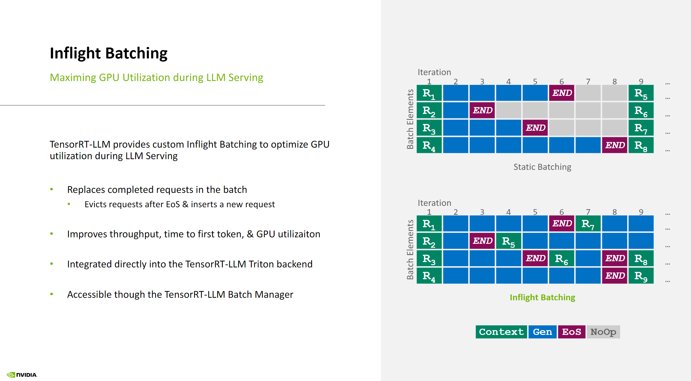

Introduction
Welcome back, reader. Long time no see. This year I was locked in working on my skill issues, hence did not have time to write much. But wanted to close the year with a deep technical dive into LLM inference optimization.
In this post, we’ll dissect the key performance metrics of LLM inference engines - from TTFT and ITL to throughput measurements. We’ll explore GPU memory/compute bounds, analyze batching strategies like in-flight batching (IFB), and simulate their effects on system performance. Whether you’re optimizing inference latency or scaling deployment, understanding these fundamentals is crucial for building efficient LLM systems.
Latency Metrics
Several important metrics are available in the benchmarks:
- TTFT (Time To First Token): measures the time it takes for the model to generate the first token of a response.
- E2E Latency (End-to-End Latency): measures the total time it takes for the model to generate a complete response.
- ITL (Inter-Token Latency): also known as Time Per Output Token (TPOT), measures the average time the client waits between consecutive tokens in a response in the streaming scenario.
To separate the prefill characteristics from the decoding ones, TTFT and ITL are reported independently in tools like GenAI-Perf, as shown in the image below.

Estimating Inter-Token Latency (ITL) For Human Perception
Let us try to estimate typical inter-token latencies for human perception. Consider the following details:
- Normal reading for comprehension speed is about 200–230 words per minute (wpm).
- Skimming speed is 700 wpm (see wiki).
- We can assume that an arbitrary token accounts for around 0.75 words, on average (as a standard simplifying assumption used a lot for English).
Let’s convert these to ITL-compatible units of ms/token. Using reasonable average input statistics, we can expect to get decent average output statistics via some simple unit conversion.
def calculate_itl(wpm, words_per_token=0.75):
## NOTE: 60 seconds to a minute, 1000 milliseconds to a second
## NOTE: Unit arithmetic of [t/s] = [(words/min) * (tokens/word) * (min/s)] = [(words/min) / (words/tokens) / (s/min)]
tokens_per_second = wpm / words_per_token / 60
## NOTE: Unit arithmetic of [ms/t] = [(ms/s * s/token)] = [(ms/s) / (token/s)]
inter_token_latency_ms = 1000 / tokens_per_second
return inter_token_latency_ms
print(f"READING: 230 words per minute correspond to {calculate_itl(230):.0f}ms between tokens, on average")
## 196
print(f"SKIMMING: 700 words per minute correspond to {calculate_itl(700):.0f}ms between tokens, on average")
## 64In the vast majority of the LLM inference setups, ITL is much lower than these reference values, typically around 20–40 ms. Still, it’s important to keep these numbers in mind as minimum thresholds for comfort.
- In addition to defining a minimum threshold for comfort, you may also find it useful to identify a maximum threshold for speed in certain contexts. For example, a chat application with a lower-than-usual load might be so fast that it dumps output at an uncomfortable rate and causes the text view to scroll automatically, making it uncomfortable to read. For these cases, artificially sleeping between or iterating over streaming yields may be desirable.
- LLMPerf, another common benchmarking SW, incorporates first-token latency into inter-token latency computation. Beware of comparing directly the results from different benchmarking tools.
Simulator
Using this simulator, we can model our properties of interest to their extremes and see how our system performs in asymptotic cases. Lets try to understand how Tensor-LLM assembles the requests into batches.

You see two plots above. In the top plot, you can see batch composition depending on time. Each column is one LLM evaluation from the first layers to the last. The color of the cell and the letter represent the current stage of the request in the batch:
Each cell in the plot represents one of three states:
- prefill (pink) - Initial processing of the prompt
- decoding (yellow) - Generating each output token
- empty slot (blue) - No active request
The width of cells indicates timing: - Prefill width = TTFT (2 ticks in this example)
- Decoding width = ITL (1 tick in this example)
In the bottom plot, you can see the measured latencies at the moments of measurement. For example, the pink \((2, 2)\) point represents the TTFT measurement of our request: at the time of \(2\) ticks the prefill has been completed and it took \(2\) ticks for our request. Similarly, we represent the E2E latency of \(5\) measured at \(5\) ticks by the green-yellow point. Additionally, we show the current queue size by the orange line. Since we send only one request in this example, it is always equal to 0. Note that the latency scale uses the left y-axis and the queue size uses the right one. The x-axis is shared between both plots.
You can check the repo for more examples and details, simulating different batching strategies and their effects on the system.
Batching: The Key to Efficient Throughput
GPUs are very good at processing highly-parallelized and concurrent tasks. For example, an NVIDIA H100 GPU has 16,896 FP32 Cores per GPU and 528 Tensor Cores organized into 132 streaming multiprocessors (SMs) (see the datasheet), where each core can execute an independent thread of mathematical computation and each SM can parallelize hundreds of threads (either core-enabled math operations or parallelizable memory operations) at a time. The most efficient way to utilize the GPU is to make sure all the SMs always have something to compute and some memory operations to run at any given time.
Memory-Bound and Compute-Bound Functions
Now consider a simplified model where a function reads its input from memory, performs math operations, and then writes its output to memory. Let’s assume \(T_{mem}\) time is spent in accessing memory and \(T_{math}\) time is spent performing math operations. If we further assume that memory and math portions of different threads can be overlapped:
- The total time for the function is \(max(T_{mem}, T_{math})\), and the longer of the two times demonstrates what limits performance.
- If math time \(T_{math}\) is longer we say that a function is
math limitedorcompute-bound. - If memory time \(T_{mem}\) is longer then it is
memory limitedormemory-bound.
Let’s connect these topics to the LLM operations we take for granted in typical use.
Prefill:
During prefill, most operations are compute-bound.
- Propagating the initial context requires larger matrices to interact to resolve attention across the entire prefill context.
- The intermediate results of the calculation are written to KV-cache (cached attention matrix values stored in memory), but that requires few memory operations.
- Compute-bound property generally manifests after a certain prefill token limit (in my tests, around 300 tokens or more cause \(T_{math} > T_{mem}\) on my GPU setup).
Decoding:
During decoding, most operations are memory-bound.
- Generating one token at a time means the input for each next token is a single embedded token and many cached components, which results in small matrix operations during forward propagation.
- The KV-cache from previously provided/generated tokens continues to grow, so retrieving requires more resources.
To improve the efficiency, you need to increase computations per read byte of memory. The simplest way to do it is by batching the requests together. With the batch size b the system can load the weights of the LLM from the GPU memory to the SMs once, but compute b next tokens.
Arithmetic Intensity
To help support this model, arithmetic intensity is a common metric for evaluating the compute-boundedness of a given function. It is defined as the ratio of floating-point operations to the number of data elements accessed by the function - usually in FLOPs/byte - with a high arithmetic intensity indicating a high computational load.
Below is a figure from the paper SARATHI: Efficient LLM Inference by Piggybacking Decodes with Chunked Prefills demonstrating the arithmetic intensity of prefills and decodes for LLaMA-13B on A6000 GPU. The different colors represent different operations within the transformer block: preproj for preprojection, a single matrix multiplication; attn for attention computation; preproj for postprojection; and ffn for feed-forward network.

Throughput Metrics
One of the advantages of using latency metrics is their ease of interpretation and lack of ambiguity. They can be measured regardless of the inference system’s organization, and they require no awkward normalization to become immediately interpretable!
However, to get from latency benchmarks to GPU count estimations, one also needs some throughput metrics. These metrics measure the capacity of a system to process data per unit of time. Here’s a breakdown of the various throughput metrics and their implications:
- Tokens per second per model instance:
- Across all phases: Measures the total processing capability of a single model instance, including pre-processing, generation, and post-processing stages.
- Only in the generation phase (a.k.a 1/ITL): Focuses on the model’s ability to generate tokens, offering a direct measure of the model’s generative performance.
- Tokens per second per GPU:
- This metric can be specified for either only the generation phase or all phases, indicating how effectively a GPU is being utilized to process tokens. This helps in assessing the efficiency of the GPU in handling specific tasks within the inference pipeline.
- Tokens per second per server:
- Similar to the per GPU metric but scaled up to the server level. This measures the overall throughput of an entire server, which may contain multiple GPUs and model instances. It’s crucial for evaluating server-level performance and infrastructure scalability.
- Prompts per second:
- Per Model Instance: This measures how many complete prompts a single model instance can handle in one second, providing a straightforward metric of model instance efficiency.
- Per GPU: Reflects the number of prompts a GPU can process per second, useful for gauging GPU performance in a real-world application scenario.
- Per Server: Measures the capacity of a server to handle prompts, indicating the throughput at the server scale.
- Concurrent Metrics:
- Concurrent Requests: Refers to the number of requests a system can handle at the same time. It’s a critical measure of system robustness and concurrency handling.
- Concurrent Clients: Indicates how many clients can simultaneously interact with the system without degrading performance, essential for understanding the scalability of client-server interactions.
Choosing The Right Throughput Metric
Often, benchmarking software shortens the units to just tokens/second, leading to ambiguity about the applied normalization. For the purposes of sizing, the most convenient throughput metric is prompts/second/server, which allows benchmarkers to choose between different combinations of tensor parallelism strategies (from now on TP) with the number of servers being a natural parameter. In our established benchmarks, we normalize by the standard servers with 8 GPUs, meaning that we consider the throughput of 2 instances of TP4 or 8 instances of TP1. This metric also highlights the dependence of the throughput on the specific composition of requests, including input and output lengths.
Inflight Batching (IFB)
IFB is a technique used during LLM inference to balance GPU memory with compute utilization and reduce latency.
During auto-regressive inference, the LLM is evaluated from the first layers to the last for every token to generate, using previous tokens to generate the next ones. The process involves:
- The first call to the LLM producing the prefill token
- Subsequent calls generating the decoding tokens
IFB enables sequences at different stages (prefill and decoding) to be processed within the same batch, without requiring all requests to be completed before the next one can enter the batch.
Key Benefits of IFB:
- Allows for a nearly constant batch size for each token, resulting in higher GPU utilization
- Enables new request execution to start quicker when slots are available, as the scheduler only needs to wait for the generation of the next token, not the completion of current requests
See the illustration below for a visual representation of in-flight batching in TensorRT-LLM:

Chunked Context
To optimize performance, you can separate the prefill into chunks and batch together one chunk of prefill and multiple deco dings to attempt a balance between \(T_{mem}\) and \(T_{math}\). This technique is implemented in TensorRT-LLM as Chunked Context. It is important to keep chunks large enough to still be able to reach compute-boundness.
Max Batch Size
TensorRT-LLM engines have two parameters called max_batch_size:
- One is set for the engine build and is used during the kernel selection process to make sure the resulting batch-size-capable system fits into memory.
- One is set for runtime and specifies how many requests can be batched together. This is the one we use in our simulation.
Note that the second one should be less than or equal to the first one. See the docs for details.
Outro
Hope it was useful. See you at the top!